Annotated screenshots
Fourteen pictures of the software doing real work, each with what it is showing and why that matters.
The network in most of these is EPA's own Net3, placed on the real streets of Novato, California. The one drawn on a site plan is a small commercial development. Nothing here is a mock-up: every frame is the program running in a browser, and the numbers on them are numbers it worked out.
Starting
Seven worked examples, open on arrival
You do not begin with an empty screen. The gallery opens with complete networks — EPA's reference models among them — that load, draw and solve in one click.
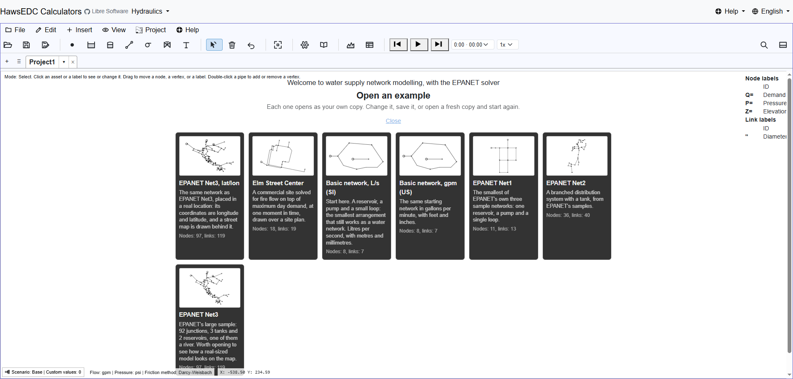
The fastest way to find out whether a tool is any good is to watch it solve something you already know the answer to. That is what these are for.
Your EPANET file opens, and it tells you what it did with it
Importing Net3.inp: 97 junctions, reservoirs and tanks, 119 pipes,
pumps and valves, in GPM — then a plain list of what came across and what did not.
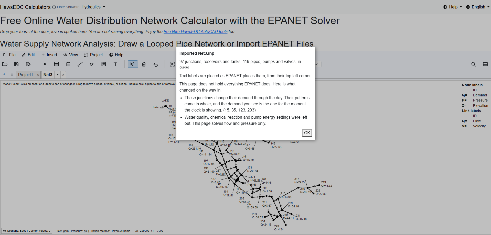
This does not claim to hold everything EPANET holds. It reads the parts it supports, reports every difference rather than dropping anything silently, and writes the file back out again.
Drawing something somebody else has to read
A drawing, not a diagram
A small commercial development on its own site plan: hand-placed labels on leader lines, a title block, and the pipes drawn over the real thing they are in.

Most of the work in a report is not the solve. It is making a page a reviewer can read without you standing next to them.
Scenarios: the same network under different demands
Base and a Daily Flow case, with the three values that belong to the scenario alone counted in the status bar and ringed on the map.
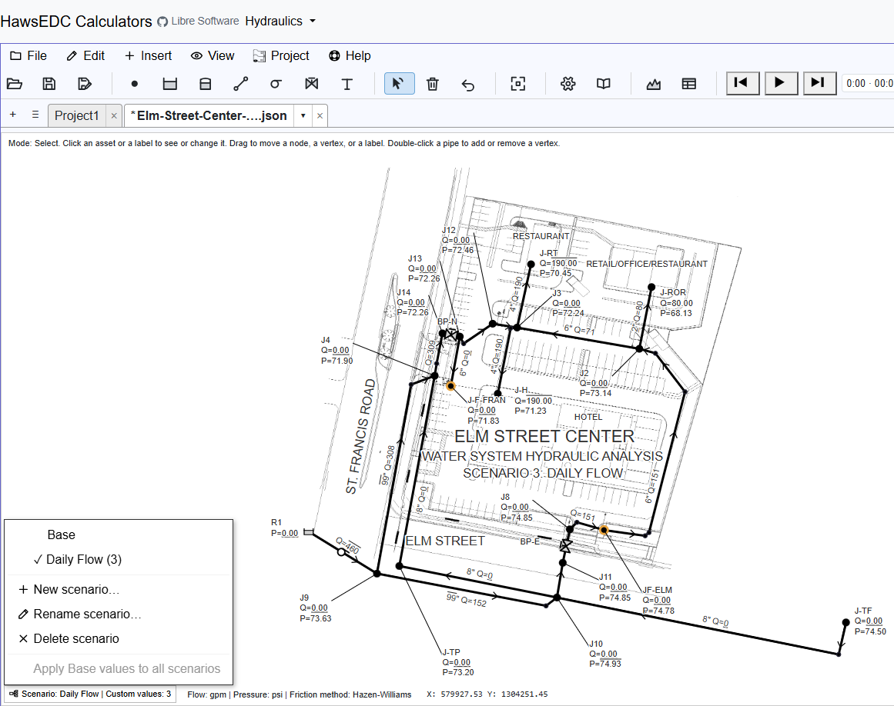
A scenario holds only what it changes. Everything else stays the one network, so fixing a pipe fixes it everywhere.
Putting the model on real ground
Scaled and placed on the town it serves
The model on Novato, California, with its own corner handles and a stated ground scale. You drag, turn and scale it until it sits where it belongs.
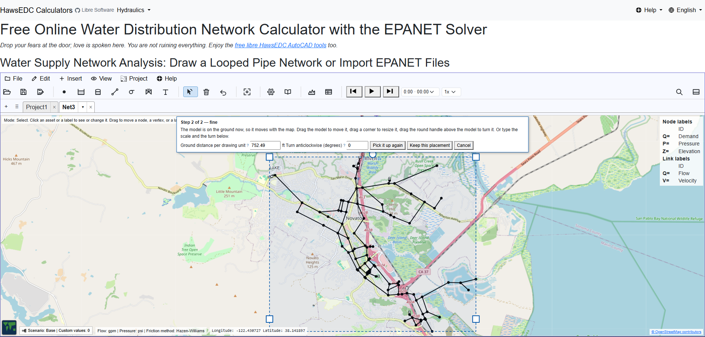
A drawing that came out of a CAD file has coordinates that mean nothing geographic. This is the step that puts it on the Earth — nothing moves until you confirm, and Cancel puts your original numbers back exactly.
And then the pipes are in the streets
The same model zoomed to street level: Novato Boulevard, the high school, US 101 — and the mains running where mains run.
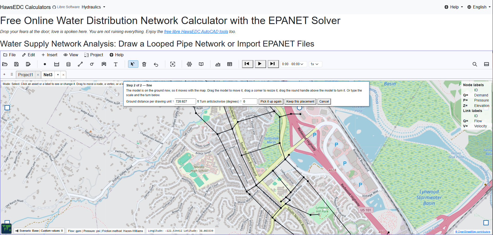
This is the moment a model stops being an abstraction. It is also the moment somebody who is not an engineer can look at your screen and follow what you are saying.
Reading the answers
The map above, the profile below
Pressure by colour across the network, and under it the ground surface, the hydraulic grade line and the pressure band along a chosen path — 26 nodes, 79,161 ft.

The profile is the drawing that answers "why is the pressure low up there", and it is the one a client understands on sight.
Colour you choose, not colour you are given
The ColorBrewer scheme picker over satellite imagery — sequential, diverging and qualitative families, with the band boundaries yours to set.
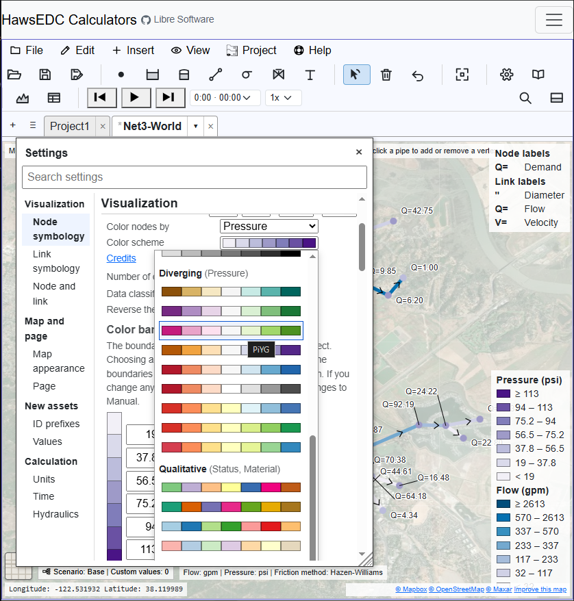
Cartographers' palettes rather than a rainbow, because a rainbow's colours carry no order — nothing in the spectrum says which end is more, which side of a middle you are on, or which reading is the good one.
A narrower window loses nothing
The same network, the same colour key, the same settings — in a window about 840 px wide, with the panels stacked into one column.
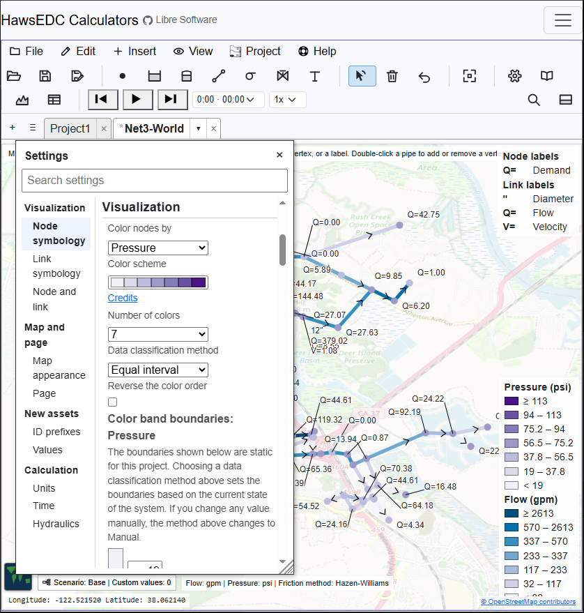
This is a narrow desktop window, not a phone. What it shows is that at this width the layout reduces by rearranging rather than by hiding. Narrower than this it does hide things; the last two plates are that case.
Over a day and over a file
Controls, read and understood
Six simple controls from a real model — Link 10 OPEN AT TIME 1,
Link 335 OPEN IF Node 1 BELOW 17.1 — each marked as understood.
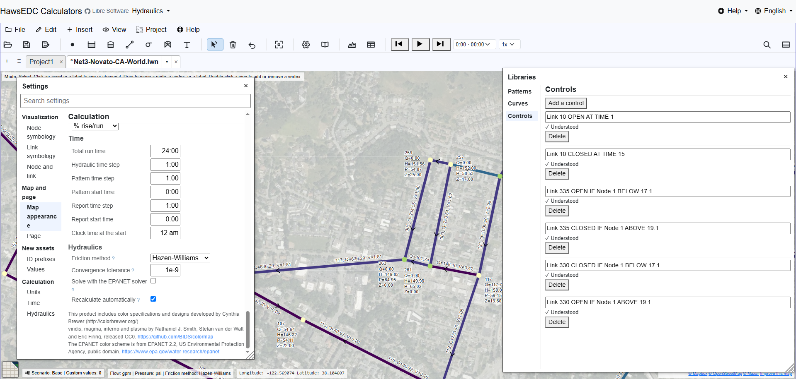
Tanks fill and drain, demands follow patterns, and the bottom pane plays the day back or steps to any moment in it — through the EPANET engine, which is where the run lives. Simple controls are read and honoured; rule-based control is a named gap, not a quiet one.
The file is yours, and it stays on your machine
The first time you save, the page explains what saving means here: the file is written only when you ask, and the browser asks its own permission first.
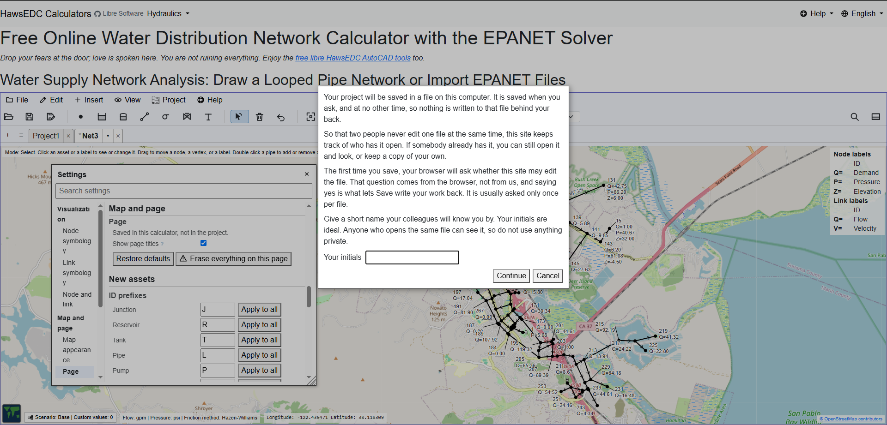
Nothing is uploaded unless you turn on a feature that needs it, and each one asks first. There is no account, and no copy of your network on anybody's server, because there is no server doing the work.
In your own language
The whole interface, not the marketing
Romanian: menus, settings, the colour key, the status bar and the tooltips — Calculator online gratuit pentru rețele de distribuție a apei.

Twenty-seven languages, and the translation is of the working interface rather than a front page. Some are stronger than others and the quality of each is recorded openly — newly written strings reach English first and the other languages afterwards.
On a phone
The whole menu, under the thumb that opened it
On display in one frame: the Water menu open directly beneath its own button, carrying Settings, Libraries, Profile, Tables, Scenarios, Calculate, and the EPANET run report; the network drawn at street level over satellite imagery behind it; the flow colour key down the right-hand side; and the units, the friction method, and the scenario stated along the bottom.
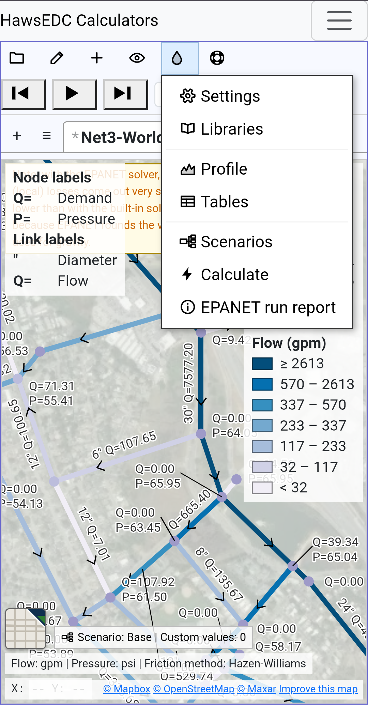
And although you of course prefer working on your PC, it works also on a phone in tall mode. It is the same program rather than a cut-down one — the same menu over the same drawing — with the page’s own headings dropped and the menu wording reduced to icons to make the room.
Find and replace, at phone width
Every pipe whose diameter is 30 — thirteen of them, listed, and each one a link to itself on the map — with the field for the new value sitting above them, still empty.
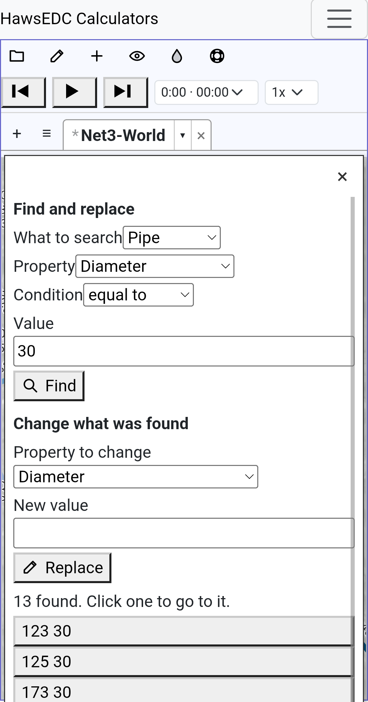
Editing a network is not only drawing it. This is the panel that changes thirteen pipes in one go, and it is the desktop panel at the width it has to fit into.
What these pictures are not
They are a selection. Fourteen frames chosen from a larger set, and the ones left out were left out for a reason: nearly all of them show a rough edge we have since fixed, and publishing one of those would be showing you a bug that is no longer there.
So take them as an invitation to look, not as proof of anything. The software is free, it runs in your browser, and nothing you draw leaves your machine except through a feature you turn on, which asks first. The honest test is your own network, and it costs you a few minutes.